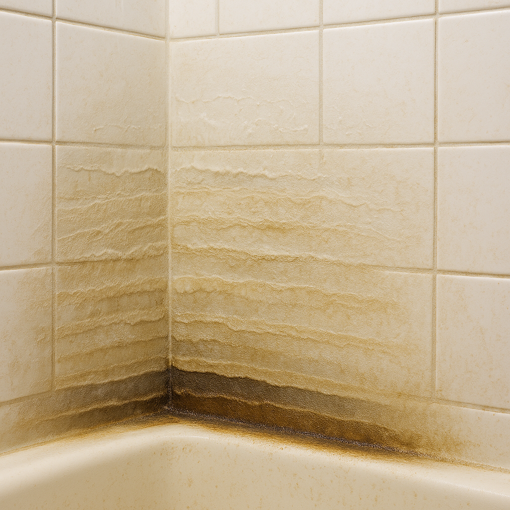

Soap Scum Is a Time Traveler
That cloudy ring on your tub? It’s not just dirt — it’s a timeline. Layer by layer, your shower is becoming a sediment record of heat, water, and molecular friction. Welcome to the geology of daily hygiene.
Diagnosis: Mineral-Matrix Entropy
Soap scum is the fossilized intersection of hard water minerals (like calcium) and fatty acids (from soap or skin oils). Add warm air, evaporation, and time — and you get a scale that clings tighter than regret.
Clues You’re Losing the Shower Battle
- White-gray film: usually on glass, tile grout, or around the tub.
- Drag when wiping: surfaces feel rougher, not smooth.
- Persistent fog: mist clings longer because the scum diffuses water vapor.
- Spots that always come back: micro-layers not fully removed.
Countermeasures: The Shower Entropy Kit
Soap scum doesn’t fear brute force. It fears chemistry, timing, and routine. These tools give you leverage over time.
The Fix
- Spray after every use — minerals begin settling within minutes.
- Squeegee your walls to disrupt evaporation-based bonding.
- Deep clean monthly using acidic cleaner or citric solution.
- Ventilate properly — humidity accelerates adhesion.
- Switch to liquid body soap (less talc, fewer fatty solids).
There’s no glamor in scrubbing walls. But there’s wisdom in knowing how entropy accumulates — and power in intercepting it early. Your tub is trying to become a cave wall. Don’t let it.
As an Amazon Associate, Low Entropy Detective earns from qualifying purchases.